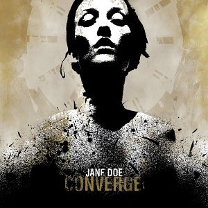

#17910 1 2007-11-14T04:10:53Z McP3000 Basically I've bought
ten llama stomachs' worth of music on my..."hiatus", and i've fallen in love with a lot of new music. This is basically a thread to say what you have been listening a lot to, and recommend music to other people.
My Diggings:
--The Allman Brothers Band: Eat a Peach
Great Album, great instrumental Mountain Jam. Southern rock at its best.
--Dream Theater: Images and Words
Even though I like Scenes from a Memory more, this is quite a good album too. For some reason i've been listening to it a lot lately...
--Iron Maiden: The Number of the Beast/Powerslave
This is one of my new favorite bands. Bruce Dickinson kicks so much ass, and these two albums rock me like a hurricane. Metal Gods.
--Judas Priest: Screaming For Vengeance
The best 'Priest album in my opinion, and the beginning with The Hellion and Electric Eye is great.
--The Mars Volta: Frances the Mute
I will always dig this album.
--Megadeth: Rust in Peace
I just got into them over the hiatus, and this classic quickly shot up to one of my favorite metal albums.
--The Music: Welcome to the North
Great alternative/indie fusion. Underrated album and i recommend it to a lot of people.
--Opeth: Blackwater Park
Wow, these guys are so haunting and beautiful at the same time. Akerfeldt knows how to growl and sing...i never thought an acoustic guitar would be in Death Metal.

--Porcupine Tree: Fear of a Blank Planet
One of the best releases of the year, it is very chilling, and Wilsons vocals compliment the musical tone quite well. Even though its heavier than more 'Tree releases, its still excellent.
--Radiohead: OK Computer/In Rainbows
Two favorite Radiohead albums. I will always love OK Computer and listen to incessantly, and as for In Rainbows, it is quite reminiscent of Hail to the Thief and OK Computer. Thom and Co. have grown a lot.
Now Y'alls turn.
Verbal warning. Watch the language outside B&T, please.
- Atilla#379312 2 2007-11-14T04:25:52Z Mosh Mind you, this is quite a soft list of alternative rock. Bite me.
--Semisonic: Singing in my Sleep
Call it what you wish, it's a meaningful song to me. I like the soft rock aspects of it, and the alternative rock aspects too.
--The Postal Service: Such Great Heights
Awesome beat, nice lyrics. Soft and melodic, yet powerful and meaningful. Very nice song. Hell, even Kaiser Peremente (medical company) used it's intro on a commercial, and MTV uses it's intro quite a lot. Great mix of electronic beats and alternative rock.
--Snow Patrol: Chasing Cars
Strong beat and undertones, synthing of bells, and amazing lyrics. Powerful song.
--Radiohead: Karma Police
Lyrics that are soft yet capable of being yelled. Nice beat and great guitar work.
--Plain White T's: Hey There Delilah
I don't care what you think of this song. I love it. I can relate to the lyrics, and the acoustic guitar is great. Not to mention it's a good song to play if you're learning guitar.
--Taking Back Sunday: This Photograph is Proof
I absolutely love the guitar work and the lyrics. Amazing song to drive to. Overall fun to listen to.
And that's only to name a few.
#379316 3 2007-11-14T04:30:57Z Pheidippides I haven't listened to a lot of "new" music recently, but I'll walk you through my playlist from before my cross country race this past Saturday.
Landslide by Fleetwood Mac
-- Great relaxing song here, calmed my nerves a bit on the bus ride to the course. I actually woke up to this song that morning, as it just happened to be playing on the radio when my alarm went off. After hearing it at 7am, I was in a great mood for the rest of the day. Good stuff.
Daylight Fading by Counting Crows
-- Love that first line, "Waiting for the moon to come and light me up inside..." Great tune, some nice guitar in there. I suggest giving it a listen.
The Space Between and What Would You Say by Dave Matthews Band
-- Classic. Great songs to keep you relaxed and energetic at the same time, which is just what I need on a race day.
First Time by Lifehouse
-- I think that's the name of the song. Anyway, really great tune.
Losing My Religion by R.E.M.
-- Another classic.
I can't remember the others I went through, but I finished it off with...
Luckie St. by Cartel.
-- That opening guitar stuff gets me pumped. I listened to this last so I'd be ready to go come the race. Aside from running a good race on Saturday, I really enjoyed the song. The cold in the song lyrics kind of fit with the chilly day of the race too. This is just some good music.
That's the best I've got for now.

#379319 4 2007-11-14T04:41:51Z epigone The Decemberists - A staple in my musical diet. They tell epic stories with their music, and listening to them once will increase your vocabulary by twofold.
Arcade Fire - I love these guys. Their music is provocative, intelligent, and surprisingly political, especially on their most recent album, Neon Bible.
Neutral Milk Hotel - If you're into indie, lo-fi, or The Decemberists (or all of them), check this band out now.
Foo Fighters - Great new album. Go buy it now!
Cold War Kids - A relatively new find for me, I've listened to them for a couple of months. Interesting music.
Radiohead - Another staple. Not to the extent of The Decemberists, but these guys just have so much quality music. In Rainbows is great.
Led Zeppelin - Yet another staple. I think this one doesn't need any explaining.
The Beatles - For some reason I've started listening to The Beatles lately.
Harvey Danger - I don't listen to them as much as others, but they have some great music, plus you can download one of their CD's entirely free off their webpage.
#379323 5 2007-11-14T04:48:06Z T3chno Radiohead's new album
Foo Fighter's new album
This Matchbox 20 song which my friend gave to me
Can't Stop - RHCP
Why Can't We be Friends? - War
Into the Night - Santana
Ventura Highway - America
I am the Walrus - Beatles
#379328 6 2007-11-14T05:23:15Z Shark Cassidy's new album B.A.R.S.
Pop Bottles - Birdman/Lil Wayne
Ass Like That - I really don't know why....
A lot of random BFS (Bowling for Soup) songs that never made it anywhere.
#379333 7 2007-11-14T06:00:37Z Gforce20 Kita Keru - Death of Morality
Fast techno + Mix of "clean" and "dirty" styles + caffeinated musician = FTW
#379466 8 2007-11-14T22:34:07Z smartalco Hammerfall
Steel Attack
Boston
(no, im not joking, i listen to epic metal and classic rock)
#379470 9 2007-11-14T22:38:25Z 7! These are some of my favorite albums.
De Mysteriis Dom Sathanas, Deathcrush - Mayhem
Master of Puppets - Metallica
Burzum - Burzum
Panzer Division Marduk - Marduk
Holy Wars... - Megadeth (Great album, McP).
Heartwork - Carcass
Downward Spiral - Nine Inch Nails
Vulgar Display of Power - Pantera
#379473 10 2007-11-14T22:47:22Z southpaw Van Cliburn - The World's Favorite Piano Music
Specifically "Fantasie Impromptu in C Sharp Minor, Op. 66," composed by Frederic Chopin, and "Prelude in G Minor, Op. 23, No. 5," composed by Sergei Rachmaninov. Oh, and who could pass up "Liebestraume, Notturno for Piano in A Flat Major, No. 3," composed by Franz Lizst.
so yeah, I just downloaded that album after scratching my piano teacher's CD of it.
#379475 11 2007-11-14T22:57:10Z Yahoozy Arcade Fire - Neon Bible - I have come to realize that I am the only person who prefers this to Funeral.
Boris - Amplifier Worship - It's a large psychedelic wave with various motions of heaviness. The first two tracks are the greatest thing, especially when played in succession.
Deathspell Omega - Fas - Ite, Maledicti, in Ignem Aeternum - /me explodes.
Drive Like Jehu - Drive Like Jehu - One of my first introductions to math-rock, besides a few Tool tracks. I really like it.
Fennesz - Venice - Especially Rivers of Sand. It's such a pretty song. Good electronic music.
Grizzly Bear - Friend EP/Horn of Plenty - Some of the best indie stuff out right now. Go listen to the song Alligator (Choir Version).
Isis - Panopticon - Backlit, above all. I love it.
Jesu - Jesu - Your Path to Divinity, above all. I love it.
Major Organ and the Adding Machine - Major Organ and the Adding Machine - I... I don't know. It is tantalizing, though.
Melvins - Bullhead - This is where a lot of Boris inspiration comes from. The song Boris is the best example, not just because the band has taken that name, but because it's congruous to Amplifier Worship on an interstellar level. Whatever that means. It's heavy.
Neutral Milk Hotel - Neutral Milk Hotel - Yes, I gave in.
Pavement - Everything - Nothing is bad, trust me.
Sigur Rs - ( ) - Untitled 8. Untitled 8. Untitled 8. Untitled 8. Untitled 8. Untitled 8. Untitled 8. Untitled 8. Untitled 8. Untitled 8. Untitled 8. Untitled 8. Untitled 8. Untitled 8. Untitled 8. Untitled 8. Untitled 8. Untitled 8. Untitled 8. Untitled 8. Untitled 8. Untitled 8. Untitled 8. Untitled 8. Untitled 8. Untitled 8. Untitled 8. Untitled 8.
Slint - Spiderland - The roots of post-rock, and it's immoderately excellent.
Sunn O))) - Black One - Some people deny that this is actual music. I, however, am not one of those people, and this is amazing.
The Veils - The Runaway Found - Vicious Traditions. Just Vicious Traditions.
Venetian Snares - Winter in the Belly of the Snake - This is some of the best electronica ever. Ever. Gottrahmen is terrifying.
#379478 12 2007-11-14T23:15:43Z epigone Arcade Fire - Neon Bible - I have come to realize that I am the only person who prefers this to Funeral.
No, I also prefer Neon Bible to Funeral.
Neutral Milk Hotel - Neutral Milk Hotel - Yes, I gave in.
What do you mean you gave in?
#379484 13 2007-11-14T23:42:09Z rocket_thumped This past week I fell in love with Daft Punk.
#379485 14 2007-11-14T23:42:53Z Cerberus Killswitch Engage - Alive or Just Breathing, As Daylight Dies.
Deftones - Around The Fur, White Pony.
Radiohead - Everything.
Tool - Everything.
..neat.
#379488 15 2007-11-14T23:48:17Z Yahoozy Neutral Milk Hotel - Neutral Milk Hotel - Yes, I gave in.
What do you mean you gave in?
I was once a NMH-hater, but soon approached the dark side. I've always liked a number of Elephant 6 stuff, though.
#379498 16 2007-11-15T00:39:10Z McP3000 Killswitch Engage - Alive or Just Breathing, As Daylight Dies.
Deftones - Around The Fur, White Pony.
Radiohead - Everything.
Tool - Everything.
..neat.
I have Killswitch Engage's As Daylight Dies and The End of Heartache
Both pretty good.
#379518 17 2007-11-15T01:53:36Z Mechtradevil I just got the new Eagles album, Long Road Out of Eden
and 1. The title track is amazing,
then there's
2. Business as usual <- absolutely kickass
3. Somebody
4. Frail Grasp on the big picture
5. Center of the universe
All of those are great songs on the album...
I'm also listening to really old beatles at the moment, and Knights of Cydonia by Muse
I've also been checking out a little Disturbed, mostly off of Down With The Sickness...
Eric Johnson?
Postal Service?
Bloodhound Gand - Three Point One Four <- go download this song. Don't listen to it with anyone around.
#379574 18 2007-11-15T04:55:59Z McP3000 Disturbed is horrible. Im sorry.
#379630 19 2007-11-15T07:18:56Z Borealis Ginnungagap - Remiendre - Beautiful middle-eastern influenced drone.
Sunn O))) - Oracle - DRONEDRONEDRONE. </ears>
The Kilimanjaro Darkjazz Ensemble - The Kilimanjaro Dark Jazz Ensemble - I have to be in the right mood for this, but it's absolutely haunting.
Devin Townsend - Terria - ABSOLUTELY STUNNING.
Cult of Luna -Somewhere Along the Highway - Cult of Luna actually putting their own slant on the post-rock/metal genre. And completely awesome.
Alcest - Souvenirs d'un Autre Monde - Black metal/shoegaze. If you have any taste in music, get it now.
Jazkamer - Metal Music Machine - This is horrendous noise. It's about time too.
Stars of the Lid - And Their Refinement Of The Decline - Awesome. Awesome. Awesome.
#379702 20 2007-11-15T16:20:41Z Rincewind SW At the moment, I'm attempting to soak up a load of influences for my music A-Level free composition. I intend to compose some post-rock, but I might end up just doing something for string quartet. It might be easier to work with. So lots of post-rock, particularly Yndi Halda and Explosions in the Sky.
Right now, I have Aphex Twin's On on repeat.
I've also been listening to lots and lots of of Montreal - weird and wonderful pop music.
And I'm currently finding Philip Glass really interesting.
And now I have an urge to listen to Neutral Milk Hotel.
#379706 21 2007-11-15T16:25:57Z Baraba Stars of the Lid - And Their Refinement Of The Decline - Awesome. Awesome. Awesome.
^ same here. Also:
A Trip to Marineville - Swell Maps.
They're pretty British.
The Ascension - Glenn Branca.
Possibly the best experimental guitar/noise album ever.
Half Machine Lip Moves / Alien Soundtracks - Chrome.
Absolute insanity.
Tabula Rasa - Arvo Prt.
Very emotional minimalist stuff.
Balloon Music - Judy Dunaway.
...There are no instruments...just balloons. Very weird.#379710 22 2007-11-15T16:48:08Z Commander --finch
found them on last fm, pure awesomeness
--paramore
another last fm thing, i used to not like girls singing rock, but man thats awesome
--the academy is...
punky rocky awesomeness
--fall out boy
c'mon these are the guys that practicly introduced my to punk
--the clarks
yeah oldie but goodie, when i'm not in a scream at my computer mood (not often) i like them, good vocals, fun guitar
--The Starting line
please reread the academy is... part
--midtown
" "
thats all for now
#379726 23 2007-11-15T20:19:02Z scythe33 I recently heard of Robert Johnson. He's long dead, but his stuff is pretty damn good-and I can tell that he really influenced Hendrix and Clapton.
#379749 24 2007-11-15T22:18:09Z Ad I'm currently digging:
Maroon 5 - It Won't Be Soon Before Long
The Killers - Sam's Town
Incubus - Fungus Amongus (dug that out after forever)
Jack Penate - Matinee
All great albums.
EDIT: Hella bad place to make a spelling mistake.
#379755 25 2007-11-15T22:59:21Z smartalco Disturbed is horrible. Im sorry.
i don't believe i have heard anything else of their stuff, but the song of theirs that is on GH3 is pretty bad a**
#379774 26 2007-11-16T00:51:12Z 7! Stricken is from GH3. I like Stupify as well. They're not bad. If you like Disturbed, check out Mudvayne.
#379783 27 2007-11-16T01:18:03Z T3chno
Incubus - Fungus Amongus (dug that out after forever)
LYKE ZOMG!!!1!!!
An Incubus fan!!!!!!!
If you haven't already, get their S.C.I.E.N.C.E. album. It's awesome.
#379809 28 2007-11-16T02:21:52Z McP3000
Incubus - Fungus Amongus (dug that out after forever)
LYKE ZOMG!!!1!!!
An Incubus fan!!!!!!!
If you haven't already, get their S.C.I.E.N.C.E. album. It's awesome.
If he bothered to go through the labors of getting Fungus Amongus, im sure he already has SCIENCE
#379826 29 2007-11-16T03:32:02Z Animator She blinded me with Science. - Purely awesome. I'm going to play it for the 21th time now.
#379834 30 2007-11-16T03:52:43Z beginner2 Anything on the radio. No specific playlist. Most recent albums I bought were:
- Ain't Life Amazing by Kim Mitchell
- Test for Echo by Rush
- Snakes & Arrows by Rush.
That's it.
#379843 31 2007-11-16T04:22:35Z capt_weasle Don't Stop Believin' - Journey
Bring It (Snakes on a Plane) - Cobra Starship
Electropop - Jupiter Rising
#379852 32 2007-11-16T04:50:29Z McP3000 Don't Stop Believin' - Journey
Bring It (Snakes on a Plane) - Cobra Starship
Electropop - Jupiter Rising
Don't stop Believing is good, but i bought the Escape album and hated it after track one. Journey was definitely a singles band.
The second one is lame and corny.
Haven't heard of the third.
#379888 33 2007-11-16T09:04:15Z Spawn of Yanni In Flames - EVERYTHING DAMNIT.
Incubus - Dig, Love Hurts.
A Perfect Circle -

the album Thirteenth Step, 'specially Pet, Passive, and Weak and Powerless. Emotive is good too, 'specially Counting Bodies.
As I Lay Dying - Forsaken, The Sound of Truth, This Is Who We Are. Their newest album, An Ocean Between Us, is a pretty new sound for them. Me likey.
Linkin Park - Bleed It Out. I used to be a big fan of them back in the days of Hybrid Theory/Meteora. When their new album came out, I wasn't really into the likes of What I've Done, completely different from their old style, as it didn't work to me. Hearing Bleed It Out was a pleasant surprise as it seemed more true to their old style, and I dunno. I liked it since I first heard it.
I'm surprised Techno says "finally another Incubus fan". I listen to them all the time; it's not like they aren't well known, or something. Pretty much the opposite.
#379956 34 2007-11-16T20:31:53Z 7! She blinded me with Science. - Purely awesome. I'm going to play it for the 21th time now.
21st.
#380016 35 2007-11-17T01:18:46Z T3chno
I'm surprised Techno says "finally another Incubus fan". I listen to them all the time; it's not like they aren't well known, or something. Pretty much the opposite.
Only cause you were the first one on the forum to post Incubus. (at least it's the first time I've seen it)
Anyways....
Little Of Your Time - Maroon 5
But, Honestly - Foo Fighters
Ventura Highway - America
#380023 36 2007-11-17T02:00:52Z Mechtradevil Almost Cut My Hair - CS&N
So Happy Together - The Turtles <- my anthem
All You Need is Love - The Beatles
White Rabbit - Jefferson Airplane
I am the Slime - Frank Zappa <- wacky guitar solos.
The Duke Regains His Chops - Zappa <- unbelievable. The song of a lifetime
Album: Year Of The Crow ~ State Radio, particularly "As With Gladness", "Wicker Plane", and "Omar Bay"
Artist: Alice In Chains;
Songs: "Man In The Box", "Would?", "I Stay Away", "Sunshine", "No Excuses", "What The Hell Have I", and "Got Me Wrong"
#380036 37 2007-11-17T02:33:23Z Mr_Mongoose Stranger things have Happened - Foo Fighters
Cloud Connected - In Flames
Just Barely Breathing - Killswitch Engage
Ten Thousand Fists - Disturbed
Lots of other new Foo Fighter's songs.
#380050 38 2007-11-17T03:55:33Z southpaw Peter Gabriel | Shaking the Tree - Sixteen Golden Greats | "Solsbury Hill"
Bob Marley | Everything's Gonna Be Alright | "Zimbabwe"
Bob Marley | Everything's Gonna Be Alright | "Stop That Train"
Queen | Greatest Hits I | "Don't Stop Me Now"
OutKast | Stankonia | "Ms. Jackson"
Immortal Technique | Revolutionary, Vol. 2 | [everything on this album]
so yeah, that's what's new's.
#380088 39 2007-11-17T07:09:58Z McP3000 In Flames - EVERYTHING DAMNIT.
Incubus - Dig, Love Hurts.
A Perfect Circle - the album Thirteenth Step, 'specially Pet, Passive, and Weak and Powerless. Emotive is good too, 'specially Counting Bodies.
As I Lay Dying - Forsaken, The Sound of Truth, This Is Who We Are. Their newest album, An Ocean Between Us, is a pretty new sound for them. Me likey.
Linkin Park - Bleed It Out. I used to be a big fan of them back in the days of Hybrid Theory/Meteora. When their new album came out, I wasn't really into the likes of What I've Done, completely different from their old style, as it didn't work to me. Hearing Bleed It Out was a pleasant surprise as it seemed more true to their old style, and I dunno. I liked it since I first heard it.
I'm surprised Techno says "finally another Incubus fan". I listen to them all the time; it's not like they aren't well known, or something. Pretty much the opposite.
The new Linkin Park album is one of the worst of the year. Everything on there is absolutely unoriginal, unentertaining, and full of bullsh*t tripe. Sure, Bleed It Out 'sounds' a little like the old Linkin Park, but there's also the fact that the song is lame, lacks metallic distortion, and involves...CLAPPING. HOW LAME AND PRETENTIOUS IS THAT.
Edit: The rest of the music on your diggings is great though.
#380098 40 2007-11-17T07:59:48Z astro Recent diggings:
Radiohead - In Rainbows.
It's a very good album and a very natural progression from Hail to the Thief. It doesn't feel strained or tense. Reckoner, especially, I have been digging.
Kraftwerk (in general).
Kraftwerk are, of course, an influential German electronic group. They have such a talent for using melody and rhythm well. It's amazing to think that they were doing this thirty years, because it doesn't sound dated. They also have a talent for catchy and quite curious English lyrics.
Talking Heads (particularly their first three or four albums)
Enjoyable music. I don't know what else to say.
#380423 41 2007-11-18T03:51:45Z usaswim Somebody Told Me - The Killers
Over You - Chris Daughtry
Music is my hot, hot sex - CSS
I don't wanna be in love - Good Charlotte
Tranquilize - The Killers
#380732 42 2007-11-19T02:49:28Z Hafling Lately I've been listening to a lot of The Who, I just got Quadrophenia, and am loving every bit of it.
The other thing I've been listening to more of lately is Red Hot Chili Peppers, as I find their bass lines amazing. <.<
#380751 43 2007-11-19T03:43:41Z Pepi I agree, the chili peppers are awesome.
Also love ACDC, wolfmother, linkin park, led zeppelin...
favorite song of all time:
Through the Fire and Flames - Dragonforce
(It's on guitar hero 3!!!)
#380763 44 2007-11-19T04:46:37Z George I agree, the Red Hot Chilli Peppers awesome!
I'm enjoying Kawai Kenji's compositions in Fate/Stay Night right now.
#380881 45 2007-11-19T15:21:58Z Cossack well - fave artists and their fave albums:
Avenged Sevenfold - most of city of evil and a couple of waking the fallen
Ill Nino - One Nation Underground
In Flames - various songs (trigger, come clarity ...)
Breaking Benjamin - Phobia
Santana - greatest hits and supernatural
Rammstein - many songs of many albums
Disturbed - various songs of various albums
Roadrunner Records - roadrunner records
and last that comes to mind at the moment is a russian band
Agata Kristi - Opium
also other random artists i like are RHCP, audioslave, slipknot, muse and classics of rock and metal.
#380884 46 2007-11-19T15:42:38Z Mr__X Radiohead - In Rainbows
Muse - Origin of Symmetry, Absolution
Kaiser Chiefs - Employment, Yours Truly, Angry Mob
Franz Ferdinand - Franz Ferdinand
And some RHCP and Led Zeppelin
#381168 47 2007-11-20T07:15:33Z Myrrhman Stars of the Lid - And Their Refinement Of The Decline - Awesome. Awesome. Awesome.
^ same here. Also:
A Trip to Marineville - Swell Maps. They're pretty British.
The Ascension - Glenn Branca. Possibly the best experimental guitar/noise album ever.
Half Machine Lip Moves / Alien Soundtracks - Chrome. Absolute insanity.
Tabula Rasa - Arvo Prt. Very emotional minimalist stuff.
Balloon Music - Judy Dunaway. ...There are no instruments...just balloons. Very weird.
We have very similar taste; I'm surprised anyone here knows those artists.
I saw Chrome in the summer; great band.
Have you listened to any of Branca's symphonies?
#381308 48 2007-11-20T21:41:58Z Mosh Asian Dub Federation
Specifically their songs Flyover and Fortress Europe.
#381374 49 2007-11-21T01:42:04Z Palemoon blasting the Buckethead right now
#381400 50 2007-11-21T02:50:23Z Rudess Dream Theater - Octavarium(2000) Excellent Album, Must buy! Ask me for tracks if you can't find it.
Dream Theater - Systematic Chaos(2007) Latest and 2nd best album yet!
Dream Theater - Octavarium(Live At Budokan)(2002) Best Live Performance Yet!
Liquid Tension Experiment - Liquid Tension Experiment 2(????) Awesome Rock Music.
Dream Theater Images And Words(????) Not bad, Metropolis is really good.
#381481 51 2007-11-21T12:50:39Z wedgie Currently, as in right this second, I am digging Sigur Ros as I am watching the full stream from the Takk tour that LV posted. You can never get too much of Sigur Ros.
#381546 52 2007-11-21T19:04:49Z Baraba We have very similar taste; I'm surprised anyone here knows those artists.
I saw Chrome in the summer; great band.
Have you listened to any of Branca's symphonies?
No symphonies yet, just his Theoretical Girls work...And I would have killed for those tickets.
#381555 53 2007-11-21T19:58:23Z Xév She blinded me with Science. - Purely awesome. I'm going to play it for the 21th time now.
I love that song too!

But my favorite songs right now are:
Marillion-Assassing Truly amazing. My friend.
Marillion-Grendel A really long song but nice. And freaky. I can't really tell if I like it or not, and that's what I like about it.
Phish-Round Room It grows on me every time I listen to it.
Those are pretty much my 3 favorite songs at the moment.
#381558 54 2007-11-21T20:03:30Z 7! Behemoth is good black metal. I like "Slaves Shall Serve."
#381634 55 2007-11-21T23:50:11Z Myrrhman As for me:
Arthur Russell - World of Echo: Great for late night work sessions
Patsy Cline - Patsy Cline Story: Really don't know why this has clicked, but it has.
Supersilent - Supersilent 6, Supersilent 8: Some of the best improvisational experimental jazz being made today
Beirut - The Flying Club Cup: An even more impressive follow-up to a promising debut. Great potential.
Xiu Xiu - Fabulous Muscles: More of a re-visit, despite Stewart's perversions and at time uncomfortable/abrasive style, he still packs a lot of passion into his fragmented songs.
Boredoms - Vision Creation Newsun: Transcendent.
#381639 56 2007-11-22T00:15:47Z Myrrhman Oh, also, Panda Bear's Person Pitch. Still album of the year in my opinion, and it's been a great year for music.
#385280 57 2007-12-02T05:50:09Z Mr__X I just got all four albums by Sigur Rs. Awesome.
#385299 58 2007-12-02T06:38:53Z Sgt. Poptarts Daft Punk > Electronic
DJ Micro > Electronica
DJ Tisto > Electronica/Dance
Great to listen to if you're into that sort of thing.
#385463 59 2007-12-02T21:19:54Z Pepi definitley digging led zeppelin right now
#385522 60 2007-12-03T00:15:28Z Baraba On a garage band kick:
Wipers
Dead Moon
Rocket From the Tombs
#387637 61 2007-12-09T06:05:59Z T3chno Some Dream Theater.
RHCP B-sides. Some of those are great. Don't know why they aren't on the album.

More Incubus (Earth to Bella is a great song)
Some Led Zeppelin
Muse
More Radiohead, I got OK Computer
Serj Tankian (Elect the Dead)
The White Stripes
#387679 62 2007-12-09T10:39:38Z fingersonthefrets broken social scene's self titled
I bet i'll be addicted to the rest in a month or so but i haven't bought the other albums so i can't comment on em yet.

awesome band
#387680 63 2007-12-09T10:53:55Z Goatman I'm not usually a one song man but...
The Perfect Drug- Nine Inch Nails
I was moshing to that while my parents watched the Countdown spectacular!
#387681 64 2007-12-09T10:58:18Z fingersonthefrets I'm not usually a one song man but...
The Perfect Drug- Nine Inch Nails
I was moshing to that while my parents watched the Countdown spectacular!
moshing.. by yourself?!

#387706 65 2007-12-09T15:57:05Z maximo Further Seems Forever right now... Older but still good.
#387709 66 2007-12-09T16:00:05Z Skyline Ad Astra Per Aspera. Quite an excellent band.
http://www.sonicunyon.com/ecards/suncd112/#387743 67 2007-12-09T19:00:59Z Hafling Hmmm... I haven't been able to stop listening to Guns N' Roses lately... especially "November rain".
#387854 68 2007-12-10T00:54:01Z Romaniac Just recently got the Arcade Fire's Neon Bible
I love the track Intervention
Also Eurythmics - Sweet Dreams Are Made of These
is a great song
And i still like the Timesplitters2 soundtrack by Graeme Norgate
#388337 69 2007-12-11T13:39:59Z Invictus A few of my favorite albums:
Ride the Lightning - Metallica
Master of Puppets - Metallica
...And Justic for All - Metallica
Kill 'em All - Metallica
The Black Album - Metallica
Load - Metallica
ReLoad - Metallica
#388362 70 2007-12-11T16:36:34Z rocket_thumped Boris
Boris
Boris.
#388366 71 2007-12-11T17:32:14Z epigone Just recently got the Arcade Fire's Neon Bible
I love the track Intervention
Great band, great album, great song.
The more you listen to that album, the better it gets.
#388372 72 2007-12-11T17:53:44Z Mechtradevil Mostly sublime right now,
cause I just got seriously ripped at a Badfish concert and it was intense. I'm mostly listening to Wrong Way, What I Got, and I've Seen Better Days.
#388424 73 2007-12-11T22:01:49Z Myrrhman I suppose I'm the only one here who was majorly disappointed in Neon Bible . . .
#388658 74 2007-12-12T09:06:07Z astro I suppose I'm the only one here who was majorly disappointed in Neon Bible . . .
Apparently so. What disappointed you about it (I take it you liked Funeral)?
#388667 75 2007-12-12T09:38:52Z southpaw Bob Marley | Everything's Gonna Be Alright | Jah Live
best song I've heard of his. It's perfect for those times when you don't want to listen to something loud and obnoxious, just something to relax and feel like you are at peace with everything.
#388669 76 2007-12-12T09:52:33Z George Annalissa Kerrigan. She's got a pure, angelic voice.
#388819 77 2007-12-12T22:08:49Z eternal_moonlight right now in diggin foo fighters, thursday, linkin park, and all-american reject's
#388878 78 2007-12-13T00:07:01Z Myrrhman I suppose I'm the only one here who was majorly disappointed in Neon Bible . . .
Apparently so. What disappointed you about it (I take it you liked Funeral)?
It just feels like a mess. I do like Funeral, and I found it unfortunate that it got praised more than it should have been. It was good, but not the genre-defining classic that critics lauded it as. I feel with that tremendous weight on their shoulders, it would definitely be hard to make a follow-up. To me, Neon Bible relies too much on formula, but a broader and vaguer scope. The lyrics are so general that they sacrifice the coy earnest that made tracks like Neighborhood #1 so endearing; now they're tackling the hot points (war, religion, darkness of soul) with nothing fresh to offer to the table. Also, the production I think betrays a lot of the songwriting as it's generally just too loud and glossed, suggesting that the songwriting just isn't strong enough to support simpler or more concise arrangements. And a lot of the songs follow a very predictable structure.
It has some good songs, but as an album, I just don't think it has much lasting quality.
#388922 79 2007-12-13T01:24:07Z >stardeash Currently i am listening to:
- Darkest Hour
- Still Remains
- Death
- Unwritten Law
- Taking Back Sunday
- Saosin
- Gorillaz
- Aiden
#392077 80 2007-12-21T22:53:43Z T3chno Digging the Strokes a lot.
Repitilia is an awesome song.
#395996 81 2008-01-03T02:21:46Z capt_weasle Lessee.....
Let the Flames Begin - Paramore (3:18)
Fences - Paramore (3:19)
When It Rains - Paramore (3:35)
D.A.N.C.E. - Justice (4:02)
I Turn My Camera On - Spoon (3:32)
My Mathematical Mind - Spoon (5:02)
Vittorio E. - Spoon (3:40)
The Devil Went Down to Georgia - The Charlie Daniels Band (3:44)
And Through the Fire and Flames by Dragonforce (7:21 is a LONG song for GH) only because of Guitar Hero III. Oh, and Paint it Black for the same reason.
#395998 82 2008-01-03T02:22:51Z Knock Me Sideways Just got a Citizen Cope CD, and I'm digging it.
#396027 83 2008-01-03T03:04:33Z >stardeash I'm listening to a lot of "Protest The Hero". I loved them way back when before they were more mainstream now their like blowing up a bit more and becoming more popular and all the people who said they hated them before now like them. It pisses me off when people do things like that. Stupid stereotypical friends.
#396044 84 2008-01-03T03:30:50Z capt_weasle I hate when people say that they "loved [band] before everyone else knew them," but now "hate them because everyone else knows them and I 'don't follow the crowd.'" Not pointing the finger at >stardeash (he didn't really say that), but it is still irritating.
#396085 85 2008-01-03T04:48:49Z >stardeash I didn't mean to lean towards dropping them now. I still listen to and like the band but it just pisses me off when that happens. It has been happening a lot lately with several different things.
#396090 86 2008-01-03T04:56:55Z T3chno I've been listening to the Killers a lot lately.
#396095 87 2008-01-03T05:01:36Z Twistkill My library is slowly expanding... I have about 30 or 40 new songs since I posted that thread asking for help. Right now, I'm getting into more rock like A Perfect Circle, Puddle of Mud, Tool, and Rammstein, and I'm still searching for more bands. I'm also adding some more trance, because I absolutely love the sounds. Dj Tiesto, Paul Van Dyk, Armin Van Buuren, Paul Oakenfold, Ron Van Den Bueken...
#396103 88 2008-01-03T05:27:41Z >stardeash If you like Paul Oakenfold you have to get the song "Read Steady Go" by him. Currently listening to a bit of Paramore, Taking Back Sunday and Silverstein.
#397520 89 2008-01-06T04:03:41Z T3chno Began listening to a bunch of Audioslave.
#397553 90 2008-01-06T05:04:25Z epigone I've just discovered Milosh and LCD Soundsystem.
#397648 91 2008-01-06T12:46:29Z >stardeash Currently i am listening to a lot of Killswitch Engage, Rise Against, Quest Of Aidence and Six Feet Under.
#398073 92 2008-01-07T01:52:32Z Pepi Really liking Linkin Park, Disturbed, and RHCP right now.
#398365 93 2008-01-07T16:53:26Z nimrod Loving Dream Theater, Liquid Tension Experiment and Porcupine Tree at the moment.
#400465 94 2008-01-13T10:32:55Z LittleViking #400531 95 2008-01-13T19:17:39Z eternal_moonlight Guns N' Roses - Sweet Child O' Mine
Rise Against - Prayer of the Refugee
Thursday - For the Workforce Drowning
Snow Patrol - You're All I Have
Mmhmm.
#400534 96 2008-01-13T19:27:31Z heatwave Guns N' Roses - Sweet Child O' Mine
Rise Against - Prayer of the Refugee
Thursday - For the Workforce Drowning
Snow Patrol - You're All I Have
Mmhmm.
Wow, those are my favorite songs too.
#400536 97 2008-01-13T19:28:56Z Pepi Enjoying Nirvana at the moment.
#401300 98 2008-01-16T20:35:51Z nimrod Just discovered Neal Morse. I had heard him in Transatlantic, but his solo albums are awesome! Thoroughly recommend him to any prog rock fans out there.
#401372 99 2008-01-17T00:35:08Z >stardeash You have to listen to the 3 best bands ever. (Wtf, can't make a list...)
- Modest Mouse
- Children Of Bodom
- In Flames
#401384 100 2008-01-17T00:54:13Z Pepi Woo modest mouse! dont know about the other two though
#401389 101 2008-01-17T00:57:10Z wedgie I'm currently listening to a bit of 'Boards of Canada,' who are pretty good.
I'm also getting very much into many lo-fi kind of skater type music. You know, the sort that you always hear in skating, surfing type videos.
#401408 102 2008-01-17T01:31:42Z Pepi I'm also getting very much into many lo-fi kind of skater type music. You know, the sort that you always hear in skating, surfing type videos.
haha, what?
I'm liking alot of the chili peppers older stuff like mothers milk, uplift mofo party plan, and freaky styley
#401581 103 2008-01-17T11:13:58Z fingersonthefrets the strokes (especially they're first two albums), architecture in helsinki, broken social scene
too bad i can't go to bss's gig ;_; 18+
i wish i could get into 18+ gigs...
#401615 104 2008-01-17T13:48:43Z wedgie I'm also getting very much into many lo-fi kind of skater type music. You know, the sort that you always hear in skating, surfing type videos.
haha, what?
I'm liking alot of the chili peppers older stuff like mothers milk, uplift mofo party plan, and freaky styley
You know, if you have ever watched any surfing or skating videos then you will notice that they always have a very similar sounding type of music in them. Usually very repetitive and nearly always instrumentals. Go watch the extreme sports channel dammit.
#401823 105 2008-01-18T20:26:21Z Pepi I'm also getting very much into many lo-fi kind of skater type music. You know, the sort that you always hear in skating, surfing type videos.
haha, what?
I'm liking alot of the chili peppers older stuff like mothers milk, uplift mofo party plan, and freaky styley
You know, if you have ever watched any surfing or skating videos then you will notice that they always have a very similar sounding type of music in them. Usually very repetitive and nearly always instrumentals. Go watch the extreme sports channel dammit.
Hmm. Yeah I guess.
Instrumentals - that reminds me, Cliffs of Dover by Eric Johnson is an amazing instrumental.
#401829 106 2008-01-18T21:37:55Z bonzai Rivage - Cirque du Soleil
Hahaha, me and my weirdo circus songs.
#401833 107 2008-01-18T22:11:13Z 7! In Flames
Opeth
Dream Theater
#402379 108 2008-01-20T18:34:30Z eternal_moonlight Im really liking all Rise Aganist right now.
#402380 109 2008-01-20T18:41:15Z Cerberus Mudvayne, Dream Theater, and Megadeth.
#402389 110 2008-01-20T18:56:17Z Borealis I'm loving Dead Can Dance again. And that Xanopticon album, Limited Space. Symphwrak is such an insane thing.
#402392 111 2008-01-20T19:02:54Z Pepi Wolfmother. All the way
#402476 112 2008-01-20T23:30:25Z >stardeash Listening to Modest Mouse (still), Glasseater, Insomnium, and Lamb Of God.
#402697 113 2008-01-21T15:05:08Z nimrod Dream Theater
Excellent band.
Just getting into Rush. I also really like Dave Weiner's solo album and Steve Morse seems to be pretty good.
#402941 114 2008-01-22T01:25:23Z >stardeash I'm still listening to Modest Mouse
Also listening to Hopes Die Last, Children Of Bodom, Morning After Massacre's demo song, Slipknot, Reverie Sound Revue and Saosin.
#402972 115 2008-01-22T02:17:15Z N4ever Pink Floyd fan forever. David Gilmour's guitar style is really soulful and beautiful.
I listen to them a lot. Either that or the Beatles.
#403070 116 2008-01-22T06:10:59Z >stardeash I have to say that since i heard Weisslenny0's "sad song" i loved it. Thats currently what I'm digging.
#406266 117 2008-02-02T04:39:49Z T3chno the strokes (especially they're first two albums)
The Strokes are great.
As for me.
-The Killers
-The Killers
-The Killers
-The Killers
and..
-The Killers
#406271 118 2008-02-02T04:48:09Z kkstrong0 I acutally am really digging Yussaf Isalm at the moment!
#406284 119 2008-02-02T05:39:35Z Weisslenny0 Right now, Zack Kim (namely his song "Dear Tiesto"), and Gary Schutt's remixed Imperial March. They're both so cool...

And, sorta music, the game Phase. Had it for half a week and it's sooo gooood!
#406288 120 2008-02-02T05:46:45Z Skyline It's totally all Arcade Fire right now! (Mostly Funeral.)
#406317 121 2008-02-02T10:25:09Z fingersonthefrets the presets, the go! team, jamie T, and a bit of gotye ('specially the first two)
#406794 122 2008-02-04T01:10:49Z >stardeash Listening to a lot of Asian Dub Foundation, Saosin, and Escape The Fate.
#410741 123 2008-02-19T23:51:10Z eternal_moonlight Foo Fighters-Long road to ruin. That kinda stuff
#410742 124 2008-02-19T23:53:20Z T3chno A bunch of Arctic Monkeys.
some
Four Year Strong..
#410763 125 2008-02-20T00:45:32Z Pepi Iron Maiden. Good stuff.
#410850 126 2008-02-20T05:45:09Z fingersonthefrets the go! team, gorillaz, cut copy
#410851 127 2008-02-20T06:03:07Z Skyline Common's new album. Specifically 'The People', 'The Game', and 'Forever Begins'. Man, this guy is definitely my favorite rapper.
#410862 128 2008-02-20T07:42:55Z Weisslenny0 Right now, I'm digging Tom Lehrer's "Remains Of Tom Lehrer" album. It's awesome
#411486 129 2008-02-22T18:26:53Z GreenEggsAndHam @fingersonthefrets: Jamie T's awesome
Music I'm digging... The Ting Tings, Ida Maria, Let's Wrestle, Lykke Li, Laura Marling (her debut album is AMAZING) and Vampire Weekend.
#411674 130 2008-02-23T13:22:21Z Limer Hmm, Mindless Self Indulgence, The Feeling, Dance Gavin Dance, System of a Down, Yourcodenameis:Milo.
oh, and Vyvienne Long. Her EP is one of the best from 2007. Well, me thinks.
#411773 131 2008-02-23T23:00:52Z Pepi Right now, I'm digging Tom Lehrer's "Remains Of Tom Lehrer" album. It's awesome
I really liked that stuff about 6 or 7 years ago

Love Wolfmother at the moment.
#411782 132 2008-02-23T23:29:18Z Baraba Right now, I'm digging Tom Lehrer's "Remains Of Tom Lehrer" album. It's awesome
Nice.
Listening to Cryptopsy right now. Anyone who's heard Flo Mounier's drumming knows why it's so intense.
#412879 133 2008-02-29T11:20:07Z fingersonthefrets i seem to like music that uses samples, eg.
the avalanches, the go! team, gotye, DJ shadow..
#412918 134 2008-02-29T18:36:45Z Mae Songs I like at da mo...
Buckcherry~Sorry
Miley Cyrus~See You Again
Pop It Off Boyz~Crank Dat Batman

#413067 135 2008-03-01T14:18:58Z Borealis Right now, I'm digging Tom Lehrer's "Remains Of Tom Lehrer" album. It's awesome
Nice.
Listening to Cryptopsy right now. Anyone who's heard Flo Mounier's drumming knows why it's so intense.
I know what you mean. His drumwork is incredible.
/me np: Cryptopsy - "Graves of the Fathers" [None So Vile (1996)]
#413068 136 2008-03-01T14:29:10Z squibbles Iron Maiden. Good stuff.
Saw them play live recently.
When they played fear of the dark everyone did the thing.
#413450 137 2008-03-03T04:22:35Z The_Muffin_Man Zappa, Steve Morse Band, The Dixie Dregs
#413453 138 2008-03-03T04:26:12Z Pepi Yay Linkin Park. Minutes to Midnight, Meteroa, and Hybrid Theory rock!
#414978 139 2008-03-08T17:01:29Z eternal_moonlight Yay Linkin Park. Minutes to Midnight, Meteroa, and Hybrid Theory rock!
Linkin Park=Win
Ballroom Blitz- Sweet
Learn to Fly- Foo Fighters
Highway Star- Deep Purple
#417662 140 2008-03-17T02:01:42Z bobaganuesh_2 [All]
#418014 141 2008-03-17T23:14:00Z astro Recently, I've been listening to Radiohead b-sides from the OK Computer era (eg. the No Surprises/Running from Demons and Airbag/How Am I Driving? EPs). Exceedingly good stuff.
#418686 142 2008-03-19T06:19:35Z fingersonthefrets hot chip and bag raiders mainly atm.
#420127 143 2008-03-22T19:10:47Z Rincewind SW Los Campesinos!
I think this band is so perfect for me, they must have been following me around and writing music that is so directly attuned to my aesthetics that I've fallen completely in love with them. That's not to say you wouldn't enjoy them as well...
Also, Belle & Sebastian, Black Kids and Vampire Weekend, as well as just about anything else that might be described as indie pop.
And JUST WAIT A MINUTE. Frets, if that is the rocket from the Los Campesinos! video in your signature, I am officially in love with you.
#420149 144 2008-03-22T20:04:21Z Ngaged I'm starting to discover a lot more coldplay and muse songs that I really like an kind of envoke emotions in me. Warning sign by coldplay is a great example.
For my classical fix, I've discovered Josh Groban and his awesomeness. If only I had a voice like that...
#420159 145 2008-03-22T20:47:24Z Skyline The Decemberists! Specifically the Crane Wife trilogy.
#422489 146 2008-03-28T00:12:09Z fingersonthefrets Los Campesinos!
And JUST WAIT A MINUTE. Frets, if that is the rocket from the Los Campesinos! video in your signature, I am officially in love with you.
so, where do you wanna get married?
atm i really like los campesinos! (bought their album yesterday, took me ages to find it) and the flaming lips ( i only got yoshimi atm, ill get the other albums once ive bought about 15 other albums...

), foals ( i wanna get their EP .. and album when it comes out, whenever that'll happen) and a bit of hot chip, i need to get their other album
#432982 147 2008-05-01T08:00:10Z uber Music I like at the moment: (not in any order)
Muse - Stockholm Syndrome, Knights of Cydonia, Supermassive black hole
My Chemical Romance - teenagers
Blur - Song2
Black Sabbath - Ironman
Foo Fighters - The pretender
That random Numa Numa Dance song
#434017 148 2008-05-05T21:46:25Z handofgod0 disturbed and santana
as i just went to the beale street music fest in memphis.
I've also been getting into some bob marley more lately (bought exodus a while ago and didnt really do anything with it)
plus a few local bands that im friends with
#434019 149 2008-05-05T21:50:05Z beginner2 Green Day - Misery
#434603 150 2008-05-08T20:32:34Z Ragamuffin New bands the last few (2-3) months: Queens of the Stone Age, Vampire Weekend, Talking Heads, Sonic Youth, The New Wine, The Yummy Fur, Los Campesinos!, Sublime, Joy Division, The Last Shadow Puppets, Datarock, Dag Vag, The Good The Bad & The Queen, some Gorillaz, some Beatles and some Foo Fighters. And I've recently started listening to some The Strokes, Ima Robot and The Go! Team.
#435816 151 2008-05-13T16:01:30Z handofgod0 cool local bands:
oracle and the mountain
organ thief
blind conspiracy (my band)
groundspeak
go myspace em
#435817 152 2008-05-13T16:13:36Z Mae Three Days Grace
#435860 153 2008-05-13T19:42:15Z 7! Enslaved.
#436325 154 2008-05-15T14:30:27Z handofgod0 i just redescovered three days grace after straying from them 4 a while
ther truly amazing
and pearl jam is now my fave i lub eddie vedder man
indifference...go...daughter...jeremy all good songs
#441690 155 2008-06-04T00:06:17Z Templex Lemon Jelly
Crystal Castles
Bag Raiders
Giant Panda
Cut Copy
Data
#441840 156 2008-06-04T10:52:18Z Ragamuffin Been listening to
Been listening to
Beatles
The Beautiful Girls
Can
Cut Copy
Familjen
Foo Fighters
Franz Ferdinand (B-sides and whatnot)
Hot Chip
Joy Division (!!)
The Kooks
Last Shadow Puppets
Los Campesinos!
Madrugada
The New Wine (!)
Nick Cave
The Notwist
Oasis
Queens of the Stone Age (!)
Radiohead
Razika
The Replacements (;D)
The Residents (some)
Rubies
The Smiths
Sublime (!)
The Yummy Fur (!)
The last month or so.
#442758 157 2008-06-07T19:05:26Z BlckNWhteNnja Lately
All the albums of Eric Johnson

All Jack Johnson
Avenged Sevenfold
Signal Seven (my guitar teacher)
Red Hot Chili Peppers
Led Zeppelin
Collective Soul
Wu-Tang Clan

All That Remains
Lamb of God
Trivium
Rise Against
Beethoven
Nickel Creek
Some Metallica
System of a Down

Trans-Siberian Orchestra
Pretty Diverse
#446354 158 2008-06-19T14:51:08Z sTalkR lately, i've been listening to
maximo park - our earthly pleasures (probably the only album ever where every single song is perfect)
der tante renate - simplex / schecter (any german around that knows this congenial guy?)
clickclickdecker (german again

)
nada surf
garden state OST
juno OST
ratatat
low vs. diamond
tokyo police club
yup thats about it
#446656 159 2008-06-20T05:26:00Z fingersonthefrets 'Ghost Train' by Gorillaz
been listening to it a heap.
#446660 160 2008-06-20T06:23:30Z Yahoozy Dinosaur Jr's rendition of "Show Me The Way", Spiderland, some Sonic Youth.
#446688 161 2008-06-20T09:51:55Z wilderness the forest and the fire (demos)
does it offend you, yeah? (sugary summery fun)
bloc party (silent alarm revisited)
mew (staple)
wolf parade (new stuff)
at the drive-in (early EPs)
will haven (el diablo, carpe diem)
#447133 162 2008-06-21T19:18:44Z Rincewind SW David Bowie!
Os Mutantes!
Steve Reich!
Neutral Milk Hotel!
#447134 163 2008-06-21T19:20:05Z Palemoon The new ladytron album! woohoo@!#!@#@1!!
#447138 164 2008-06-21T19:33:30Z Eiturlyf Rammstein!
Serj Tankian!
System of a Down!
Lordi!
SWEENEY TODD!!
#447231 165 2008-06-21T23:39:46Z Weisslenny0 I second Sweeney Todd.
Also, Prince Ali (from Aladdin), and Under The Sea (from The Little Mermaid). Awesome songs.
#454174 166 2008-07-21T06:37:56Z _makio_ I'm into random music.
Top four out of the list below:
1 - Linkin Park
2 - The Last Goodnight
3 - Regina Spektor
4 - The Killers
These are in a random order (top of head order)
- Daft Punk (Discovery, Alive 2007[Greatest Album Ever!!!])
- The Killers (All)
- HelloGoodbye! (fave song at the moment - Two Weeks in Hawaii)
- Until June
- Maroon 5
- Linkin Park
- The Showdown
- The Last Goodnight
- Meese
- The Fray
- Dj Tiesto (Dance for Life - awesome track)
- Coldplay (Viva La Vida - got it the other day)
- Missy Higgins
- Regina Spektor
- Kate Miller-Heidke
Edit: - Franz Ferdinand
#454204 167 2008-07-21T13:05:39Z 7! I'm on a Slayer kick right now. "On and on, south of Heaven!"
Oh, and in case any of you like progressive metal... I HIGHLY suggest you listen to Opeth's Watershed album. One of the greatest albums I've listened to.
#454455 168 2008-07-22T20:57:14Z whaleshow527 I'm getting into Polish metal: Vader, Behemoth, Decapitated, stuff like that. Some of the heaviest darn music I've ever heard.
#454483 169 2008-07-22T23:35:17Z under_pressure Well, it's really just one song mainly, but courtesy of lord_day,
The Girls.
#454504 170 2008-07-23T02:13:16Z 7! I'm getting into Polish metal: Vader, Behemoth, Decapitated, stuff like that. Some of the heaviest darn music I've ever heard.
Behemoth \m/ If you like them, you should look into Nile. Brutal death metal with Egyptian influences.
#454523 171 2008-07-23T04:02:58Z whaleshow527 I'm getting into Polish metal: Vader, Behemoth, Decapitated, stuff like that. Some of the heaviest darn music I've ever heard.
Behemoth \m/ If you like them, you should look into Nile. Brutal death metal with Egyptian influences.
Oh yeah, I know Nile. Interesting band. "Amongst the Catacombs of Nephren Ka" still sounds great after a decade, and also there was that one line from their newest album: "Anoint my phallus with the blood of the fallen." Haha.
#454531 172 2008-07-23T04:47:21Z Templex Sam Sparro
Sigur Rs
Ratatat
MGMT
M83
Venetian Snares
Klaxons
Justice
Black Moth Super Rainbow
Crystal Castles
Cut Copy
#454535 173 2008-07-23T05:05:55Z astro Currently digging chiptunes and still digging Mor ve tesi.
#454710 174 2008-07-23T23:25:16Z 7! Has anyone heard of FinnTroll?
#454762 175 2008-07-24T02:23:33Z epigone Bloc Party, Silent Alarm.
Yeppers.
#454973 176 2008-07-25T02:12:31Z _makio_ Has anyone heard of FinnTroll?
I don't think anyone, anywhere has heard of them...
They don't exist, you will go back to sleep now and when you wake up, the nice men in white coats will help you get better. Ok?
#455530 177 2008-07-28T16:28:08Z heatwave The Strokes. Particularly, You Only Live Once.
Fun to play on the guitar.
#455536 178 2008-07-28T16:42:00Z 7! Has anyone heard of FinnTroll?
I don't think anyone, anywhere has heard of them...
They don't exist, you will go back to sleep now and when you wake up, the nice men in white coats will help you get better. Ok?
Funny you say that, since my friend was the one who introduced me to them.
#455556 179 2008-07-28T18:17:02Z Borealis Has anyone heard of FinnTroll?
I don't think anyone, anywhere has heard of them...
They don't exist, you will go back to sleep now and when you wake up, the nice men in white coats will help you get better. Ok?
Funny you say that, since my friend was the one who introduced me to them.
And is your friend a psychiatric nurse? Because it would make an awful lot of sense.
Anyway. Dev/Null's Oldschool Jungle mix. Fennesz and Ryuchi Sakamoto's Cendre. "Polaris" by Exxasens. "A Livingroom Hush" by Jaga Jazzist. Merzbow's "Scissors for Cutting Up Merzbow". Dillinger Escape Plan and Mike Patton's cover of Aphex Twin's "Come to Daddy".
Yes.
#459212 180 2008-08-08T04:56:27Z capt_weasle "And I raaaaan, I ran so far away. I just raaaan, I ran all night and day, but couldn't get away."
"But that's not shape of my heeeaaart."
"Tell me a story, I know you're not boring."
#459213 181 2008-08-08T05:19:57Z Skyline MAJOR ORGAN AND THE ADDING MACHINE
I fancy this album.
#459216 182 2008-08-08T05:30:15Z Mr__X Lift Your Skinny Fists Like Antennas to Heaven - Godspeed You! Black Emperor.
#459355 183 2008-08-08T18:46:10Z T3chno Eric Johnson, Maximo Park, and the Gorillaz.
A mix of stuff, basically.
#459380 184 2008-08-08T20:24:22Z 7! I've been listening to a lot of Mayhem's live performances. Maniac sounds better live than in studio.
#459517 185 2008-08-09T15:28:56Z Rincewind SW Madvillain. It is a rare occasion that I listen to rap. But this is good stuff.
Also, my friend loaned me 5 CDs by female vocalists (we have a Thing), and some of that is really good stuff. Bic Runga, Imogen Heap and Tori Amos are surprisingly good (if a bit cheesy).
#460700 186 2008-08-15T05:30:07Z T3chno All of a sudden, I can't stop listening to Bob Marley and some other reggae stuff.
#460708 187 2008-08-15T06:30:53Z Twistkill Foo Fighters, U2, and Lostprophets, oh joy!
#460726 188 2008-08-15T10:19:20Z Eiturlyf RAMMSTEIN.
#460735 189 2008-08-15T13:08:55Z TearsOfTheSaints Theory of a Deadman... I love their new song 'I Hate My Life'.

#460750 190 2008-08-15T15:36:38Z Cerberus Devildriver. Specifically, their latest two albums.
#461762 191 2008-08-18T16:54:50Z wedgie Flobots. Heard 'handlebars' on radio 1 today, but their whole album 'Fight with tools' is amazing. Very good find.
#462393 192 2008-08-19T22:55:17Z T3chno Flobots. Heard 'handlebars' on radio 1 today, but their whole album 'Fight with tools' is amazing. Very good find.
I just got that album recently too. It is indeed very nice.
#462860 193 2008-08-20T15:13:41Z wedgie Their other album 'Platypus' is also very nice.
Also, Blue Scholars are another good hip-hop group I just found.
#462862 194 2008-08-20T15:20:04Z Eiturlyf Wollt ihr das Bett in Flammen sehen? - Rammstein
#463702 195 2008-08-22T20:48:41Z Rincewind SW Belle & Sebastian
Belle & Sebastian
Belle & Sebastian
Belle & Sebastian
#463785 196 2008-08-23T01:05:39Z Cerberus Symphony X and At The Gates.
#464272 197 2008-08-25T05:50:03Z McP3000 I've been listening to a lot of Mayhem's live performances. Maniac sounds better live than in studio.
I listened to Mayhem's De Mysteriis Dom Sathanas and I must say i was extremely underwhelmed. Even for black metal standards, the music was too repetitive and similar, unmemorable, and the vocals were really bad.
However the solo on the second track was absolutely sick. Best part easily.
Oh, this is basically what i am digging:

best metalcore album ever written
#464485 198 2008-08-26T01:35:05Z 7! McP: On DMDS, Atilla was on vocals. Freezing Moon is easily the best track on the album.
#465131 199 2008-08-28T18:21:01Z Sgt. Poptarts GamingWolf - Gdubs Captain Planet.
#474172 200 2008-09-29T17:53:19Z Mechtradevil I just got Thom Yorke's solo album, The Eraser.. it is brilliant and beautiful.
#474174 201 2008-09-29T18:25:30Z GuitarHeroMatt I was listening to Purple Haze a minute ago, but now Ive tuned into some Muse
#474238 202 2008-09-30T03:52:28Z Cerberus I'm getting into quite a lot of Queens of the Stone Age and Mastodon. Both are great.
#474243 203 2008-09-30T04:41:56Z capt_weasle Moses - Coldplay
Can't Get You out of My Head - Kylie Minogue
My Own Good - Louis
Buildings and Mountains - The Republic Tigers
Murray - Pete Yorn
Secrets (Club Mix) - 4 Clubbers
Nice Day - Persephone's Bees
I Will Possess Your Heart - Death Cab for Cutie
And just about anything by Spoon.
#474664 204 2008-10-03T18:36:17Z Romain I've been really digging Tech N9ne. I think he's probly one of the most underrated rappers of this day. Definitely get the latest album Tech N9ne - "Killer"
#474677 205 2008-10-03T22:41:06Z PNI I'm digging the Numa Numa song!
#474696 206 2008-10-04T01:53:54Z rocket_thumped Beck - Guero
#474699 207 2008-10-04T01:59:10Z T3chno Beck - Guero
I've been listening to their Modern Guilt album lately.
#475166 208 2008-10-13T23:52:46Z Xious Lately I've been listening to a lot of music by System of a Down and Tenacious D. Not sure why though